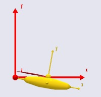
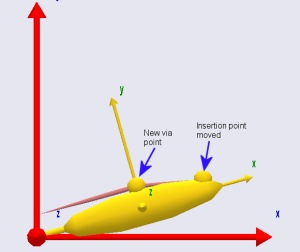

Lesson 3: Via-point Muscles¶
Although the name of the muscle class we have used so far is AnyViaPointMuscle, the example has only shown the muscle passing in a straight line between two points. Real muscles in the body rarely do so. They are usually constrained by various obstacles on their way from origin to insertion, either by connective tissues or by the contact with bone surfaces.
In the former case, the muscle tends to pass as a piecewise straight line between the constrained points, and this is relatively easy to accomplish by means of an AnyViaPointMuscle. In the latter case, the muscle may engage and release contact with the bone surfaces it encounters. This wrapping over bones is a problem of contact mechanics and optimization. It requires a different muscle class and it is computationally much more demanding. In this lesson we shall look at AnyViaPointMuscles and postpone the discussion of wrapping to the next lesson.
Anatomically, via point muscles are mostly found in the lower extremities and in the spine, while the arms and shoulders almost exclusively have wrapping muscles.

Most muscles in the legs can be modeled reasonably with via point muscles.

The deltoid muscle wraps over the head of the humerus.
Via Point Muscles¶
Via point muscles pass through a set of at least two points on their way from origin to insertion. Each of the via points must be attached to a segment or the global reference frame of the model. The first and the last of the point sequence are special because the muscle is rigidly fixed to them and hence transfers forces in its local longitudinal direction to them. Conversely, the muscle passes through the interior via points like a thread through the eye of a needle. This means that the muscle transfers only forces to interior via points along a line that bisects the angle formed by the muscle on the two sides of the via point.
Let us modify the model we have been working on to investigate the properties of via point muscles. Initially we reduce the bulging to facilitate study of the muscle path.
AnyDrawMuscle drw = {
//RGB = {0.554688, 0.101563, 0.117188};
//Opacity = 0.2;
//DrawOnOff = 1;
Bulging = 2;
ColorScale = 1;
//RGBColorScale = {0.957031, 0.785156, 0.785156};
MaxStress = 250000;
};
We then move the insertion point of the muscle a bit further out and closer to the axis of the Arm segment to make room for a via point:
AnySeg Arm = {
r0 = {0.500000, 0.000000, 0.000000};
Mass = 1.000000;
Jii = {0.100000, 1.000000, 1.000000}*0.1;
AnyRefNode Jnt = {
sRel = {-0.5, 0.0, 0};
};
AnyRefNode M1Insertion = {
sRel = {0.3, 0.05, 0};
};
AnyDrawSeg drw = {};
};
The next step is to introduce a new point on the Arm segment to function as the via point:
AnySeg Arm = {
r = {0.500000, 0.000000, 0.000000};
Mass = 1.000000;
Jii = {0.100000, 1.000000, 1.000000}*0.1;
AnyRefNode Jnt = {
sRel = {-0.5, 0.0, 0};
};
AnyRefNode M1Insertion = {
sRel = {0.3, 0.05, 0};
};
AnyRefNode ViaPoint = {
sRel = {0.0, 0.1, 0};
};
AnyDrawSeg drw = {};
};
We can then introduce the new point in the sequence of points defining the muscle:
AnyViaPointMuscle Muscle1 = {
AnyMuscleModel &Model = .SimpleModel;
AnyRefFrame &Orig = .GlobalRef.M1Origin;
AnyRefFrame &Via = .Arm.ViaPoint;
AnyRefFrame &Ins = .Arm.M1Insertion;
AnyDrawMuscle drw = {
//RGB = {0.554688, 0.101563, 0.117188};
//Opacity = 0.2;
//DrawOnOff = 1;
Bulging = 2;
ColorScale = 1;
//RGBColorScale = {0.957031, 0.785156, 0.785156};
MaxStress = 250000;
};
};
The figure below shows the result:

A muscle can pass through an unlimited number of via points, and the points can be attached to different segments. This can be used to create rather complex kinematic behaviors of muscles, but it also requires care in the definition to avoid unrealistic muscle paths when the via points move around with the different segments.
From-the-point of view of kinematic robustness, the wrapping muscles are easier to handle than via point muscles, but the price is much higher computationally. Wrapping muscles is the subject of Lesson 4.
See also
Next lesson: Lesson 4: Wrapping Muscles.
 Please report it here...
Please report it here...